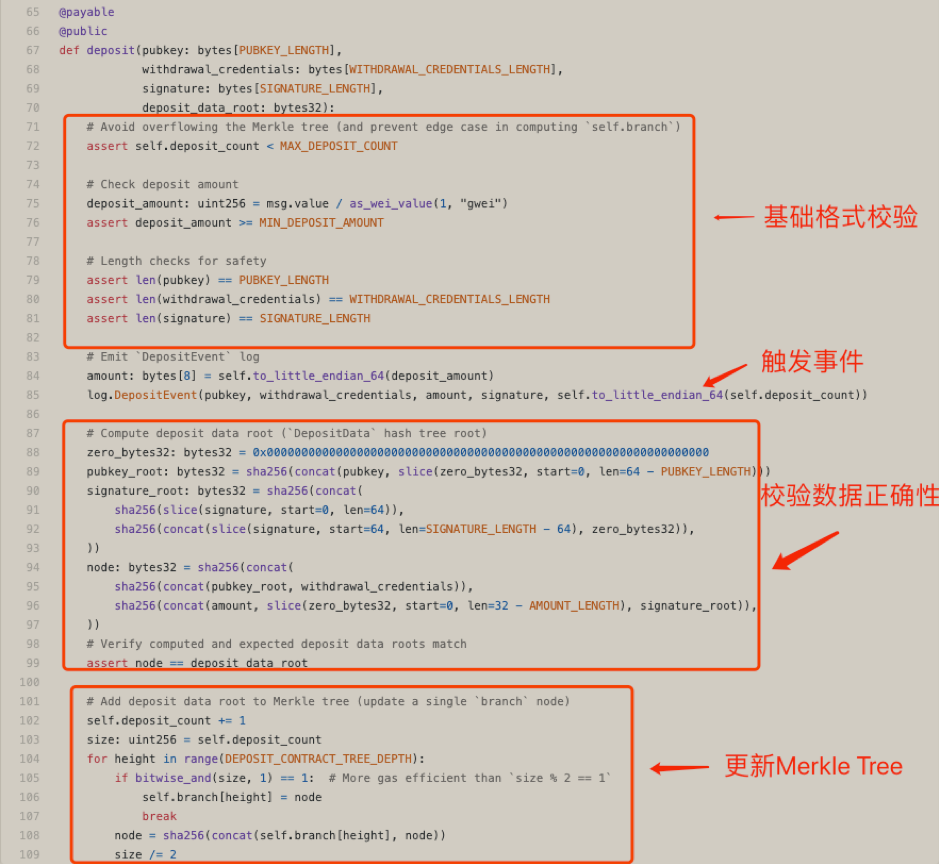
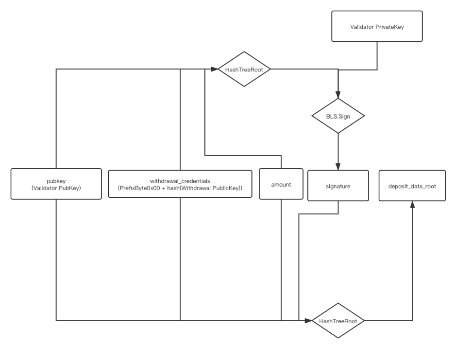
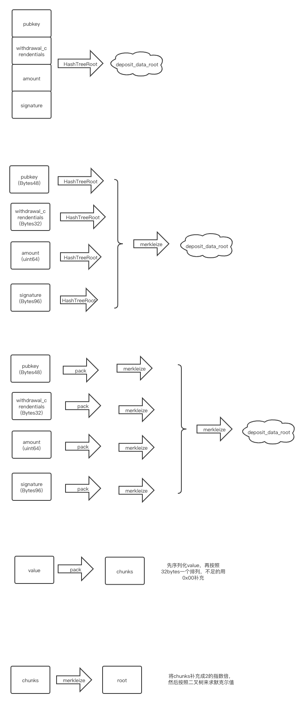
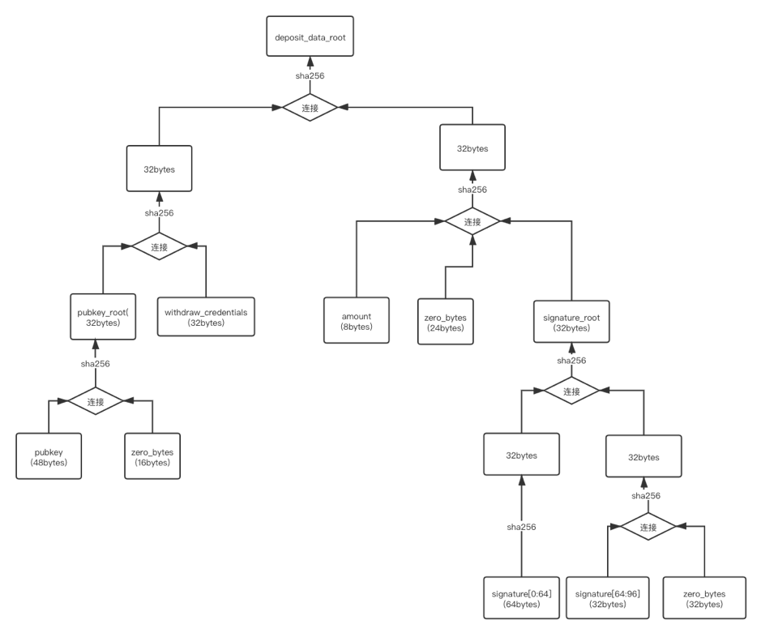

ETH2抵押合约分析
本文分析了以太坊2.0抵押合约相关实现。
Table of Contents
1 Deposit Contract
存款合约采用Vyper编写，合约地址: 存款合约 。
1.1 常量
合约先定义了一些常量，各个参数的长度等。
# Vyper target 0.1.0b13.hotfix1761 MIN_DEPOSIT_AMOUNT: constant(uint256) = 1000000000 # Gwei DEPOSIT_CONTRACT_TREE_DEPTH: constant(uint256) = 32 MAX_DEPOSIT_COUNT: constant(uint256) = 4294967295 # 2**DEPOSIT_CONTRACT_TREE_DEPTH - 1 PUBKEY_LENGTH: constant(uint256) = 48 # bytes WITHDRAWAL_CREDENTIALS_LENGTH: constant(uint256) = 32 # bytes SIGNATURE_LENGTH: constant(uint256) = 96 # bytes AMOUNT_LENGTH: constant(uint256) = 8 # bytes
1.2 存款事件
然后定义了一个存款事件。这个时间在下面的deposit方法里调用，当收到存款事件时触发。 Eth2的beacon chain通过此事件得知存款的发生，以此来更新验证者相关信息。
DepositEvent: event({
pubkey: bytes[48],
withdrawal_credentials: bytes[32],
amount: bytes[8],
signature: bytes[96],
index: bytes[8],
})
1.3 merkle tree structure
合约本身采用merkle tree存储所有的存款事件，在上面的常量设置里，合约最多接受 2^32 -1 个deposit。
最大的merkle tree深度为32。由于在智能合约里直接维护这样的结构比较费时费空间（需要gas）。
于是合约采用了incremental Merkle tree 算法。将计算Merkle Tree Root的时间和空间复杂度由 O(2^h) 减少到 O(h) .
合约里采用两个数组来实现：
branch: bytes32[DEPOSIT_CONTRACT_TREE_DEPTH]
deposit_count: uint256
# Compute hashes in empty sparse Merkle tree
zero_hashes: bytes32[DEPOSIT_CONTRACT_TREE_DEPTH]
@public
def __init__():
for i in range(DEPOSIT_CONTRACT_TREE_DEPTH - 1):
self.zero_hashes[i + 1] = sha256(concat(self.zero_hashes[i], self.zero_hashes[i]))
1.4 type convert
接下来定义了类型转化方法将uint256转化成bytes.
@private
@constant
def to_little_endian_64(value: uint256) -> bytes[8]:
# Reversing bytes using bitwise uint256 manipulations
# Note: array accesses of bytes[] are not currently supported in Vyper
# Note: this function is only called when `value < 2**64`
y: uint256 = 0
x: uint256 = value
for _ in range(8):
y = shift(y, 8)
y = y + bitwise_and(x, 255)
x = shift(x, -8)
return slice(convert(y, bytes32), start=24, len=8)
1.5 公共方法
接下来合约定义了三个公开的方法: get_deposit_root, get_deposit_count, 和 deposit 。
get_deposit_root 获取所有deposit的merkle root.
@public
@constant
def get_deposit_root() -> bytes32:
zero_bytes32: bytes32 = 0x0000000000000000000000000000000000000000000000000000000000000000
node: bytes32 = zero_bytes32
size: uint256 = self.deposit_count
for height in range(DEPOSIT_CONTRACT_TREE_DEPTH):
if bitwise_and(size, 1) == 1: # More gas efficient than `size % 2 == 1`
node = sha256(concat(self.branch[height], node))
else:
node = sha256(concat(node, self.zero_hashes[height]))
size /= 2
return sha256(concat(node, self.to_little_endian_64(self.deposit_count), slice(zero_bytes32, start=0, len=24)))
get_deposit_count 获取一共有多少deposit.
@public
@constant
def get_deposit_count() -> bytes[8]:
return self.to_little_endian_64(self.deposit_count)
deposit 是主要的存入方法，定义了当存款事件发生时如何处理。
@payable
@public
def deposit(pubkey: bytes[PUBKEY_LENGTH],
withdrawal_credentials: bytes[WITHDRAWAL_CREDENTIALS_LENGTH],
signature: bytes[SIGNATURE_LENGTH],
deposit_data_root: bytes32):
# Avoid overflowing the Merkle tree (and prevent edge case in computing `self.branch`)
assert self.deposit_count < MAX_DEPOSIT_COUNT
# Check deposit amount
deposit_amount: uint256 = msg.value / as_wei_value(1, "gwei")
assert deposit_amount >= MIN_DEPOSIT_AMOUNT
# Length checks for safety
assert len(pubkey) == PUBKEY_LENGTH
assert len(withdrawal_credentials) == WITHDRAWAL_CREDENTIALS_LENGTH
assert len(signature) == SIGNATURE_LENGTH
# Emit `DepositEvent` log
amount: bytes[8] = self.to_little_endian_64(deposit_amount)
log.DepositEvent(pubkey, withdrawal_credentials, amount, signature, self.to_little_endian_64(self.deposit_count))
# Compute deposit data root (`DepositData` hash tree root)
zero_bytes32: bytes32 = 0x0000000000000000000000000000000000000000000000000000000000000000
pubkey_root: bytes32 = sha256(concat(pubkey, slice(zero_bytes32, start=0, len=64 - PUBKEY_LENGTH)))
signature_root: bytes32 = sha256(concat(
sha256(slice(signature, start=0, len=64)),
sha256(concat(slice(signature, start=64, len=SIGNATURE_LENGTH - 64), zero_bytes32)),
))
node: bytes32 = sha256(concat(
sha256(concat(pubkey_root, withdrawal_credentials)),
sha256(concat(amount, slice(zero_bytes32, start=0, len=32 - AMOUNT_LENGTH), signature_root)),
))
# Verify computed and expected deposit data roots match
assert node == deposit_data_root
# Add deposit data root to Merkle tree (update a single `branch` node)
self.deposit_count += 1
size: uint256 = self.deposit_count
for height in range(DEPOSIT_CONTRACT_TREE_DEPTH):
if bitwise_and(size, 1) == 1: # More gas efficient than `size % 2 == 1`
self.branch[height] = node
break
node = sha256(concat(self.branch[height], node))
size /= 2
接下来我们来主要看下这里的存储merkle tree的结构和deposit方法的逻辑。
2 Deposit

Deposit方法先校验了数据的有效性，然后更新Merkle Tree结构。
Deposit里是如何验证接收的depositdataroot参数的？
这取决于这里的 deposit_data_root 是如何构造的？
根据规范， deposit_data_root 是 DepositData 的一个防止篡改的记号（例如Merkle root或者checksum）。
DepositData 的结构如下:
class DepositData(Container):
pubkey: BLSPubkey
withdrawal_credentials: Bytes32
amount: Gwei
signature: BLSSignature # Signing over DepositMessage
整体的计算流程图如下：

图上的hash采用的是sha256，而HashTreeRoot是一种对复杂/简单对象的求merkle root的方式。
2.1 HashTreeRoot
HashTreeRoot提供了将一个对象按一定格式构建默克尔树，然后求得树的默克尔根值的方法。
类似于比特币将一个区块的所有交易ID按序排列构建默克尔树，获得根值记录到区块头部， HashTreeRoot可以将一个对象（bit,bytes, vector,list,containers等等）的各个部分按序排列然后构建默克尔树，获得根值。
可以参见规范上是如何分成几种类型描述HashTreeRoot的算法的。
下图根据规范上的说明，以递归演算的方式，说明如何求得 DepositData 的root.

本质上求的一个对象的HashTreeRoot是将其各个部分按照一定的bytes大小padding，然后一层一层向上merklezie。
而合约上由于接收的对象是固定的，所以直接按照一定的格式一步一步组装计算HashTreeRoot。
代码如下:
# Compute deposit data root (`DepositData` hash tree root)
zero_bytes32: bytes32 = 0x0000000000000000000000000000000000000000000000000000000000000000
pubkey_root: bytes32 = sha256(concat(pubkey, slice(zero_bytes32, start=0, len=64 - PUBKEY_LENGTH)))
signature_root: bytes32 = sha256(concat(
sha256(slice(signature, start=0, len=64)),
sha256(concat(slice(signature, start=64, len=SIGNATURE_LENGTH - 64), zero_bytes32)),
))
node: bytes32 = sha256(concat(
sha256(concat(pubkey_root, withdrawal_credentials)),
sha256(concat(amount, slice(zero_bytes32, start=0, len=32 - AMOUNT_LENGTH), signature_root)),
))
# Verify computed and expected deposit data roots match
assert node == deposit_data_root
翻译成直观的流程图如下:
